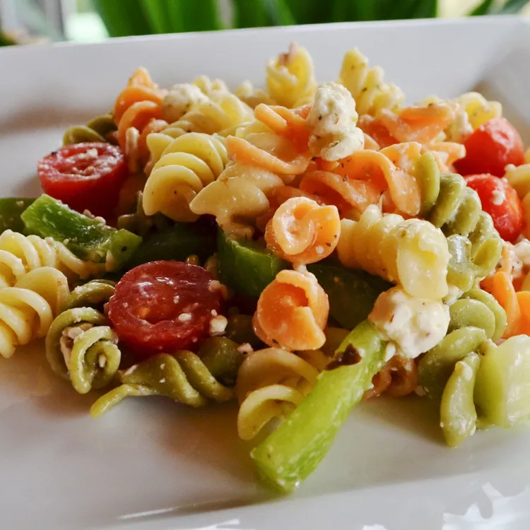

Greek Pasta Salad

Description
Use leftover pasta or store-bought prepared pasta to whip up this vibrant
salad. Featuring a wealth of fresh vegetables, salty feta, and spicy
pepperoni, it's all tied together with an herb-infused dressing.
Ingredients
- ½ cup olive oil
- 1 ½ teaspoons garlic powder
- 1 ½ teaspoons dried basil
- 1 ½ teaspoons dried oregano
- 1 ½ teaspoons dried oregano
- ¾ teaspoon ground black pepper
- ¾ teaspoon white sugar
- 2 ½ cups cooked elbow macaroni
- 3 cups fresh sliced mushrooms
- 15 cherry tomatoes, halved
- 1 cup sliced red bell peppers
- ¾ cup crumbled feta cheese
- ½ cup chopped green onions
- 1 (4 ounce) can whole black olives
- ¾ cup sliced pepperoni sausage, cut into strips
Steps
-
In a large bowl, whisk together olive oil, vinegar, garlic powder,
basil, oregano, black pepper, and sugar
-
Add cooked pasta, mushrooms, tomatoes, red peppers, feta cheese, green
onions, olives, and pepperoni
- Toss until evenly coated
- Cover, and chill 2 hours or overnight
Back To Home